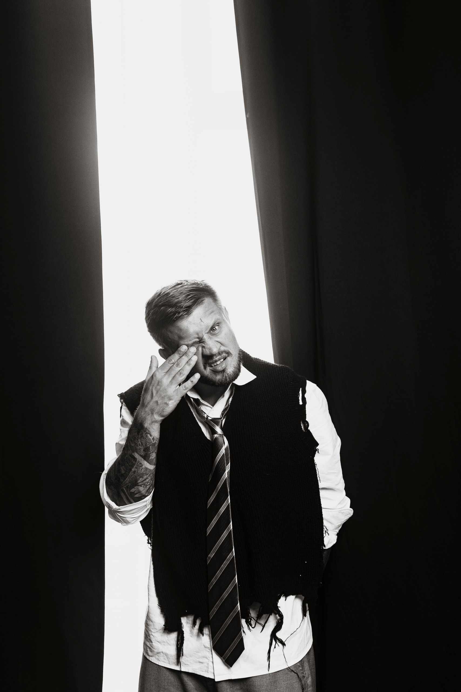

Меня зовут Сергей Воробьев, я делаю ИИ-инструменты для российского бизнеса. Здесь рассказываю, во что я верю, как попал в эту работу и что у меня сейчас на руках.

С 2023 года я собираю ИИ-системы, которые приносят бизнесу деньги: больше пятидесяти проектов, от голосового ассистента для общепита до операционной системы фулфилмент-склада.
Предприниматель говорит про маржу, простой кадра и потерянные сделки. Технология отвечает моделями, агентами и интеграциями. Эти два языка почти не пересекаются, и я держу оба: слушаю, где у вас утекают деньги, и собираю под это конкретное решение. Мини‑MBA и десять лет в обучении дают общий язык с управленцем — про процессы, роли и деньги говорим без переводчика.
Основная работа — собирать системы руками под конкретный бизнес; полсотни таких за три года. Параллельно веду три своих продукта: OpenCowork, Micmiky и Ozon-юнит. Держу их не для витрины: на них я проверяю то, что потом ставлю клиентам.
В начале 2023 года меня позвали в Skillbox методистом — писать логику курса по ИИ. До этого я десять лет учил людей: вожатый, методист в Орлёнке и Сириусе, преподаватель в Китае, разработчик образовательных программ.
На этом проекте я обнаружил странную вещь. Проектирование ИИ-агента и проектирование обучающей программы — одна и та же работа. Чтобы агент работал хорошо, ему нужно объяснить контекст так же, как объясняешь его новому сотруднику: какая роль, какие правила, какие ограничения, какие сценарии, как реагировать на нештатное.
Я зашёл в ИИ с той стороны, с которой в него обычно не заходят: со стороны умения объяснять, выстраивать логику и проектировать поведение. Тот человек, который тогда позвал меня в Skillbox, через год сам ушёл строить ИИ-направление. Я пошёл по той же дороге, но с другой стороны.
У меня был кейс, где мы технически решили задачу автоматической проверки экологических отчётов. Технология работала. Но при честном подсчёте оказалось, что содержать двух специалистов руками в моменте дешевле, чем обслуживать систему. Бизнес отказался, и был прав. С тех пор я считаю экономику до того, как пишу код.
На складе можно поставить жёсткую защиту: нельзя списать больше, чем есть на остатке. На практике это сразу ломается: поставщик прислал 515 шт вместо 500, и упаковщик честно работает с фактом. Лучше уйти в минус, но мгновенно уведомить менеджера. Жёсткая стенка превращается в детектор. Так я делаю везде: пусть система сначала покажет проблему живому человеку.
На крупных проектах одна система обслуживает три-четыре роли, и у каждой свой язык. Упаковщику нужна понятная работа и видимый заработок. Менеджеру — операции на виду и сигнал об аномалии. Владельцу — биллинг и масштаб. Универсальный интерфейс для всех проигрывает каждому из них, поэтому я делаю разные экраны поверх одного доменного ядра.
У меня был проект, где мы спроектировали голосовую систему для торговой сети. Технология, деньги и команда были на месте, а специализированного железа для нужного масштаба в стране не нашлось, и проект остановился. С тех пор в каждой оценке у меня есть отдельная строка: «риск инфраструктуры». Вопрос не только в том, умеем ли мы это сделать, но и в том, существует ли в природе то, на что мы рассчитываем.
Привёз первую делегацию русских детей в Крым под Департаментом культуры Москвы и Московской области. Был руководителем организационной группы: власть в регионе менялась, базы не было, инфраструктуры тоже, стабильного руководства тем более. Координировал вожатых, художников, звуковиков и всю бытовую логистику, чтобы детям было комфортно, несмотря на хаос вокруг. Там я научился собирать работающий процесс из ничего. В моих ИИ-проектах этот навык работает не меньше педагогического.
Восемь лет жил и работал в Китае. Преподавал, потом строил бизнес на маркетплейсах. Главный урок Китая: системы важнее людей. Когда границы закрываются, поставки рвутся, локдауны опечатывают подъезды металлом, выживают те, у кого процессы выстроены так, что не зависят от настроения одного человека. Я перенёс эту логику в работу с ИИ.
Однажды я потерял груз стоимостью 25 миллионов рублей. Это были мой бизнес, мои деньги и мой кризис. После этого я перестроил процессы так, чтобы важное жило в системе, доступной каждому, кто за это отвечает. Отсюда моя мотивация к автоматизации: я уже знаю, что бывает, когда её нет.